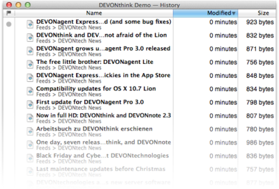

|
|
History |
|
The History panel, opened using Tools > History , lists all documents in your database, without the groups hiearchy (by default sorted by modification date which reflects content modifications only but not name or metadata changes).  Sort the list by name, age, or file size by clicking the column titles (Click again to reverse the sorting order.), and by any other criterum using View > Sort . Customize the columns using View > Columns . Of course, you can use drag-and-drop to move documents to other windows or to the Finder, and modify the documents using the commands in the Data menu or the contextual menu. Use the History panel to quickly access recently added documents or to export all documents of a certain age. |